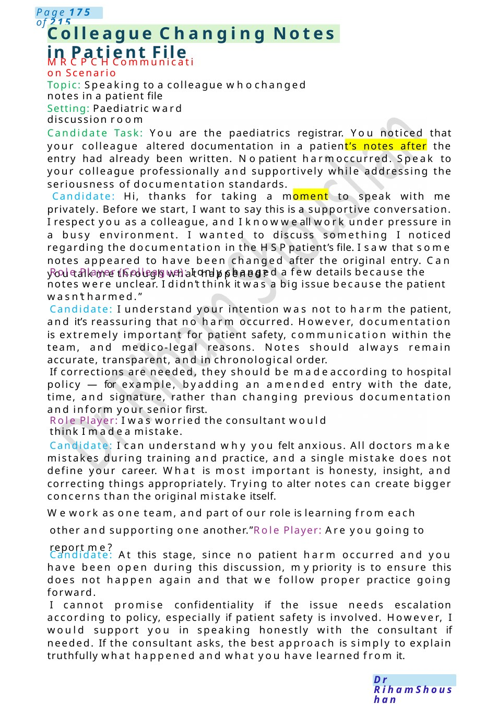
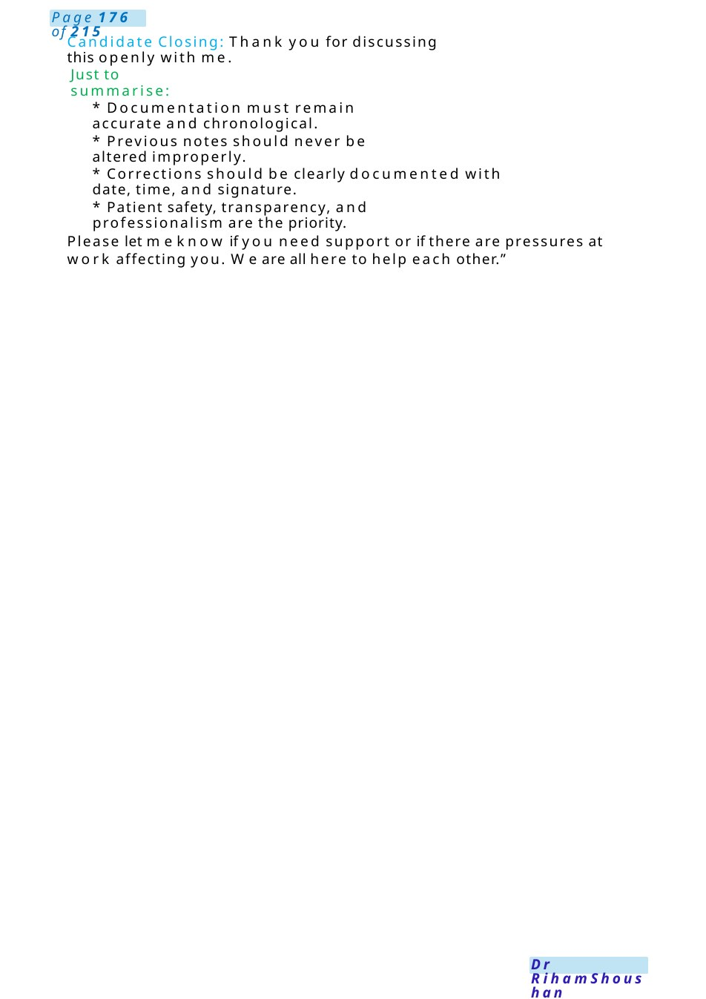
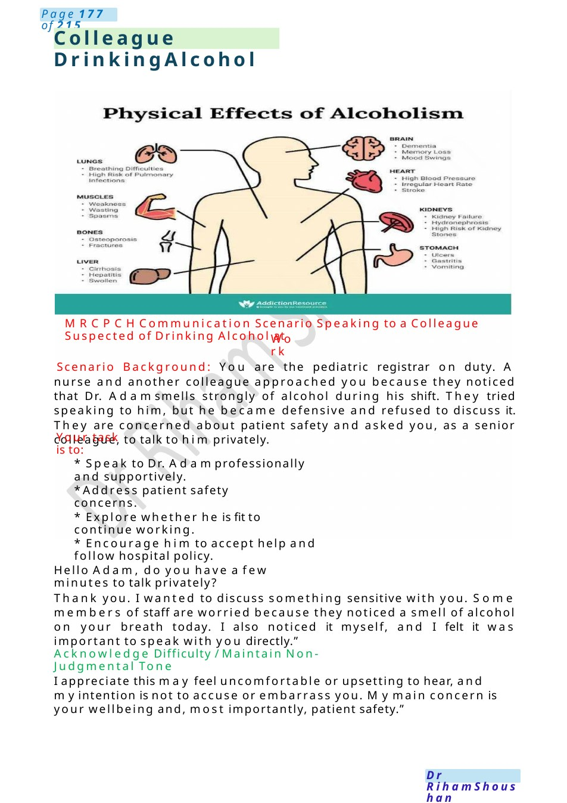
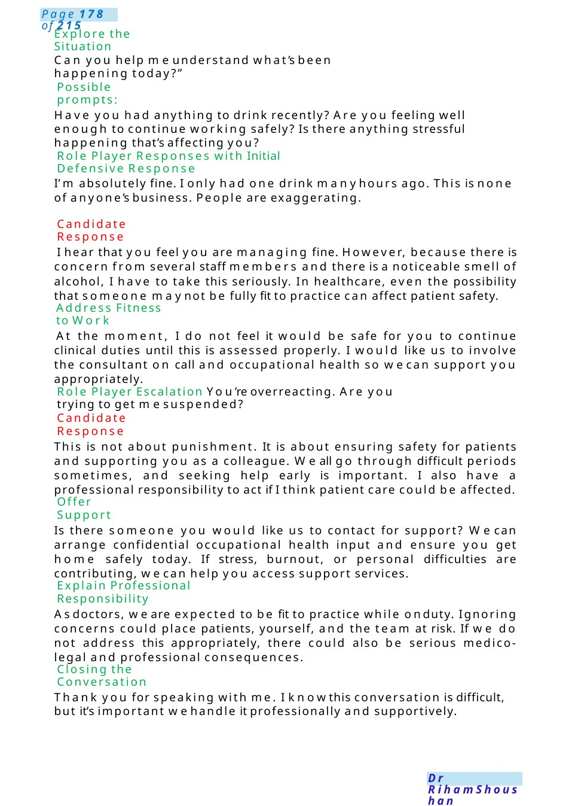

Colleague Changing Notes in Patient File
MRCPCHCommunication Scenario Topic: Speaking to a colleague whochanged notes in a patient file
Scenario Summary
MRCPCHCommunication Scenario Topic: Speaking to a colleague whochanged notes in a patient file
Full Original Scenario

Colleague Changing Notes in Patient File
MRCPCHCommunication Scenario
Topic: Speaking to a colleague whochanged notes in a patient file
Setting: Paediatric ward discussion room
Candidate Task: You are the paediatrics registrar. You noticed that your colleague altered documentation in a patient’s notes after the entry had already been written. Nopatient harmoccurred. Speak to your colleague professionally and supportively while addressing the seriousness of documentation standards.
Candidate: Hi, thanks for taking a moment to speak with me privately. Before we start, I want to say this is a supportive conversation. I respect you as a colleague, and I knowweall work under pressure in a busy environment. I wanted to discuss something I noticed regarding the documentation in the HSPpatient’s file. I saw that some notes appeared to have been changed after the original entry. Can you talk methrough what happened?
Role Player (Colleague): I only changed a few details because the notes were unclear. I didn’t think it was a big issue because the patient wasn’t harmed.”
Candidate: I understand your intention was not to harm the patient, and it’s reassuring that no harm occurred. However, documentation is extremely important for patient safety, communication within the team, and medico-legal reasons. Notes should always remain accurate, transparent, and in chronological order.
If corrections are needed, they should be madeaccording to hospital policy —for example, byadding an amended entry with the date, time, and signature, rather than changing previous documentation and inform your senior first.
Role Player: I was worried the consultant would think I madea mistake.
Candidate: I can understand why you felt anxious. All doctors make mistakes during training and practice, and a single mistake does not define your career. What is most important is honesty, insight, and correcting things appropriately. Trying to alter notes can create bigger concerns than the original mistake itself.
Wework as one team, and part of our role is learning from each other and supporting one another.”Role Player: Are you going to report me?
Candidate: At this stage, since no patient harm occurred and you have been open during this discussion, mypriority is to ensure this does not happen again and that we follow proper practice going forward.
I cannot promise confidentiality if the issue needs escalation according to policy, especially if patient safety is involved. However, I would support you in speaking honestly with the consultant if needed. If the consultant asks, the best approach is simply to explain truthfully what happened and what you have learned from it.

Candidate Closing: Thank you for discussing this openly with me.
Just to summarise:
- Documentation must remain accurate and chronological.
- Previous notes should never be altered improperly.
- Corrections should be clearly documented with date, time, and signature.
- Patient safety, transparency, and professionalism are the priority.
Please let meknow if you need support or if there are pressures at work affecting you. We are all here to help each other.”

Colleague Drinking Alcohol
MRCPCHCommunication Scenario Speaking to a Colleague Suspected of Drinking Alcohol at
Work
Scenario Background: You are the pediatric registrar on duty. A nurse and another colleague approached you because they noticed that Dr. Adamsmells strongly of alcohol during his shift. They tried speaking to him, but he became defensive and refused to discuss it. They are concerned about patient safety and asked you, as a senior colleague, to talk to him privately.
Your task is to:
- Speak to Dr. Adamprofessionally and supportively.
- Address patient safety concerns.
- Explore whether he is fit to continue working.
- Encourage him to accept help and follow hospital policy.
Hello Adam, do you have a few minutes to talk privately?
Thank you. I wanted to discuss something sensitive with you. Some members of staff are worried because they noticed a smell of alcohol on your breath today. I also noticed it myself, and I felt it was important to speak with you directly.”
Acknowledge Difficulty / Maintain Non-Judgmental Tone
I appreciate this may feel uncomfortable or upsetting to hear, and myintention is not to accuse or embarrass you. Mymain concern is your wellbeing and, most importantly, patient safety.”

Explore the Situation
Can you help meunderstand what’s been happening today?”
Possible prompts:
Have you had anything to drink recently? Are you feeling well enough to continue working safely? Is there anything stressful happening that’s affecting you?
Role Player Responses with Initial Defensive Response
I’m absolutely fine. I only had one drink manyhours ago. This is none of anyone’s business. People are exaggerating.
Candidate Response
I hear that you feel you are managing fine. However, because there is concern from several staff members and there is a noticeable smell of alcohol, I have to take this seriously. In healthcare, even the possibility that someone maynot be fully fit to practice can affect patient safety.
Address Fitness to Work
At the moment, I do not feel it would be safe for you to continue clinical duties until this is assessed properly. I would like us to involve the consultant on call and occupational health so wecan support you appropriately.
Role Player Escalation You’re overreacting. Are you trying to get mesuspended?
Candidate Response
This is not about punishment. It is about ensuring safety for patients and supporting you as a colleague. Weall go through difficult periods sometimes, and seeking help early is important. I also have a professional responsibility to act if I think patient care could be affected.
Offer Support
Is there someone you would like us to contact for support? Wecan arrange confidential occupational health input and ensure you get home safely today. If stress, burnout, or personal difficulties are contributing, wecan help you access support services.
Explain Professional Responsibility
Asdoctors, we are expected to be fit to practice while onduty. Ignoring concerns could place patients, yourself, and the team at risk. If we do not address this appropriately, there could also be serious medico-legal and professional consequences.
Closing the Conversation
Thank you for speaking with me. I knowthis conversation is difficult, but it’s important wehandle it professionally and supportively.